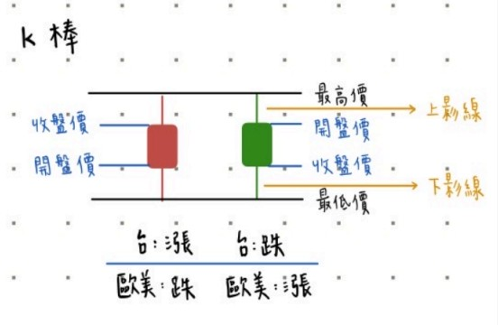

初窺金融產業

和我一起踏入神奇的金融世界吧!
為甚麼要投資理財?
如何對金錢進行「節流」?
投資?投甚麼?
- 債券:
- ETF:
- 衍生性金融商品:
股市專有名詞介紹
- 開/收盤:
- 內/外盤:
- 大盤:
- 個股:
- 類股:
- 集團股:
- 概念股:
- 均線:
- K棒:
- 做多/做空:
- 熊市/牛市:
我們為甚麼要上學?為甚麼要工作?其實他們都默默地指向一個終極目標:「賺錢」。既然如此，要怎麼樣才能讓錢越來越多?幫助我們達到自己理想中的經濟狀況?其實很簡單，那便是「投資理財」。 我們必須對金錢流進行「開源」，也就是「投資」；也必須對金錢流進行「節流」，也就是「理財」。所以人人都要學投資理財，將自己的錢做最大化的利用、將賺錢的入口開到最大，只要這麼做，大家都可以通往財富自由， 那離夢想中的汽車、房子，抑或是生活是不是又更近一點了呢?
接下來我就要簡單講講如何讓我們的錢花得更少。其實最簡單也最基本的方式就是「記帳」! 透過記帳，你才可以知道 你的錢都花到哪裡去了。好好追蹤自己的錢流，當你想要存下更多的積蓄時，你就可以看是不是花在生活中某個面向的錢太多了呢? 或許是娛樂?也可能是購物。知道自己一筆筆的錢都流到哪裡，就可以馬上對症下藥，將讓錢不斷流失的破洞補起。
投資又有分為很多種，像是虛擬貨幣、債券、股票、房地產和各種衍生性的金融商品。這次我主要會聚焦解釋股市中的各種專有名詞，現在先來 簡單介紹債券、ETF和衍生性金融商品是甚麼吧!
由政府、公司等機構發行的債券。買公司等的債券即借錢給該公司，並在之後賺取利息
即指數型股票基金，買進一檔ETF就好像買進一籃子的股票，好處很明顯的就是分散風險。 像是台灣50指數(0050)的成分股就包含台灣上市公司中的前50大公司呢!
簡短的來說，它就是:「以締結和約的方式對未來價格進行預測並賺取差價」。像是「期貨」就是一個很好的例子。想像一個情景: 廠商想要農民 買米，農民也想把米賣給廠商，在這樣的雙向需求下，兩方決定一起訂定契約，約好在未來的某一時間，廠商用「現在決定」的價格和農民買 米。這樣若未來米價上漲，廠商還是可以用較低的價格購買；而米價下跌時，農民也還是可以用較高的價格賣出。 不過這可是要對未來的 市場做預測呢! 所以如果沒把握的話，還是先別貿然嘗試!
股市的開始和結束，就分別叫做開盤和收盤；而在開盤時的第一筆成交價，就被稱作開盤價，收盤時的最後一筆成交價，就是收盤價。
內盤就是在買賣股票時，價錢成交在買方出的價，也就是說賣方願意以買方出的價成交，表示賣壓大；相對的，外盤就是成交在賣方出的價，買壓大。
大盤又稱「加權指數」，它可以看出台灣股市的整體表現如何，為市場走勢的一個指標。
單一個公司的股票，如:台積電個股。
特定產業的公司們的股票，如:電子類股。
同一集團的公司股票，如:鴻海集團集團股。
與某一特定主題相關的股票，如:AI概念股。
均線是「移動平均線」的簡稱，它的作用是可以讓投資者知道在過去的一段時間中，投資的項目是賺還是賠。 而常會聽到5日均線、20日均線、60日均線等等，那這些N日均線的算法就是「過去N日的收盤價加總/N」
K棒絕對是在看股票分析時第一個會看到的東西啦，話不多說，直接上我畫的圖解釋:

因為紅色在台灣代表股票上漲，所以收盤價>開盤價，就會看到如上左邊的樣子；那如果當天的股票下跌，當日的K棒就會如圖上右邊的樣子。
不知道大家會不會很常聽到做多、做空、熊市、牛市這些詞呢?
所謂的做多其實就是投資客預期其股價會上漲，所以就先購入股票並在上漲後賣出，賺取其中的差價。
做空就是相反的概念了，投資者預期股價會下跌，於是趕緊賣出，並在下跌後重新購回。
熊市指的就是股票市場上，股價下跌的走勢；牛市則為股價上漲的走勢。 我在查資料的時候，有看到一個很有趣的說法方便我們記憶這兩個名詞的不同: 因為熊掌攻擊是由上往下，所以股票下跌就叫做「熊」市， 好像股市走勢被熊掌往下拍，而牛角在攻擊時是由下往上勾，所以「牛」市就是股價上漲。我個人是認為這樣很有畫面，所以就更容易記住!
嗯哼~ 講了這麼多，也有點口乾舌燥啦(引用一下台灣吧的口頭禪:P)今天就先到這裡結束，謝謝大家的觀看。
Topic information
- 類別 金融
- 主題 股市
- 報告日期 13 March, 2025
- 相關連結 新手初踏股市的報告pdf檔